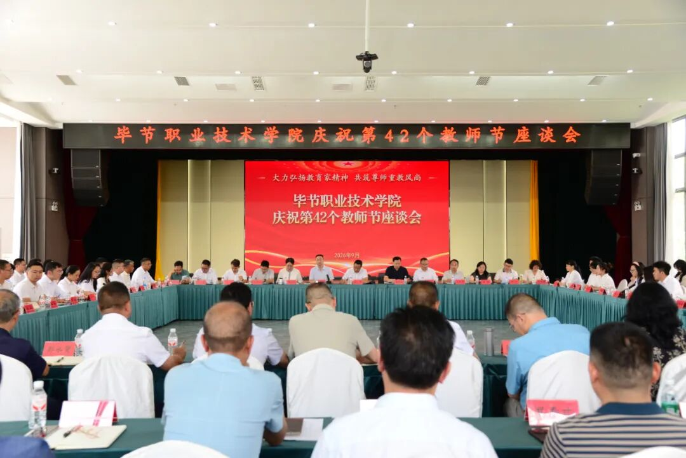

学校联合发起成立软件行业产教联盟
6月8日，软件行业产教联盟成立大会在省城举行。大会举行了成立仪式及省优秀软件企业和优秀软件产品颁奖仪式，主题演讲活动于同日举办。
软件行业产教联盟是在省工业和信息化厅指导下，由我校和浪潮集团、省软件协会联合发起成立的，联盟有企业会员196家、高校会员55所。我校任联盟副理事长单位。
此次联盟成立，标志着我校在校企合作、人才培养、创新平台建设等方面迈入了新阶段。通过建立协同育人机制，进一步推动高质量职业教育与产业发展深度融合，服务区域数字经济发展，培养适应现代产业需求的高素质技术技能人才。

学院将以联盟为平台，积极搭建校企联合培养、项目共建、资源共享和成果转化的协同机制。围绕软件工程、数据治理、大数据应用、智能制造等重点领域，深化实训基地建设，提升学生创新创业能力和就业竞争力。
会议期间，省内优秀软件企业和优秀软件产品获得表彰，进一步激发了企业创新活力，也为高校与企业之间的协同创新搭建了更加广阔的桥梁。学院相关负责人表示，未来将继续发挥职业院校服务产业、服务地方的优势，推动区域产业升级和人才供给侧结构性改革。
我校将持续加强与企业的深度合作，开展“双导师制”培养、订单培养、企业实训和就业推荐等一系列工作，让学生在真实项目和岗位环境中成长，提升将来走向产业一线的能力和专业素养。
责任编辑：宣传部 审核：学校办公室